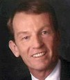

| Enterprise
Program
GridWorld/GGF15
October 3-6, 2005
Boston, MA, USA
| GRIDWORLD 2005 ENTERPRISE
SCHEDULE |
|
Revised: 10/26/2005 |
Tuesday,
October 4 |
| 9:00-9:30 |
GridWorld Kickoff (Mark Linesch)
Presentation will be posted soon.
Location: Imperial Ballroom
|
| 9:00-10:30 |
Opening Keynote Gary Beach, Group
Publisher, CXO Media, Inc.
The Business Case for Why Leading IT
Organizations are Adopting Grids
View
Presentation

In today's dynamic business environment, enterprises
around the world are aggressively working horizontally
across organizational and geographic boundaries
to delivery greater customer value and competitive
advantage. CIO's are challenged to increase the
business value of their IT services and enable
integration with customers, suppliers and partners.
The opportunity is to deliver IT as a flexible
service to the business while continuing to reducing
costs through better resource utilization and
increased automation. As large commercial enterprises
transition from vertical silos to horizontally-integrated
infrastructure and applications they are adopting
grid solutions that enable industry collaboration
while providing flexible, cost-efficient solutions
for informational integration and resource sharing.
In his opening keynote at GridWorld, Gary Beach
from CIO Magazine will discuss the global business
trends helping to shape next generation Enterprise
IT. He will explore the 10 reasons IT professionals
are adopting grid technologies to enable business
advantage. In the process, Gary will help frame
the interactive discussion between participants
at GridWorld as they discuss the business case
and roadmap for successful grid adoption within
the Enterprise.
http://www.cio.com/info/experts/gbeach.html
Location: Imperial Ballroom
|
| 10:30-11:00 |
Break, Plaza |
| 11:00-12:30 |
Panel: Exploring the First Steps toward
Grid Adoption
How do I start applying Grid technology? This
is a very natural question being raised today
by many global enterprises, which are hearing
about the widely reported, tangible benefits of
Grid, but have not yet begun to apply the technology.
Since Grid solutions, building blocks and standards
are still on their way to being adopted on any
broad scale, getting started with Grid can seem
daunting. This panel will include distinguished
members of the Grid community who have been in
your shoes and understand the struggle you face
in proving the value of Grid. Panel discussion
points include: 1) assessing where best to start
and specifying key selection criteria for determining
pilot opportunities; 2) choosing the most appropriate
solutions and building blocks to meet your needs;
3) measuring the impact in terms of improvement,
ROI and value; 4) accessing key web and community
resources at your disposal; 5) and, determining
the follow-on steps that ultimately steer your
organization toward a vision that best suits your
requirements for business success and long-term
survival.
Location: Imperial Ballroom
Moderated by: Brajesh Goyal, Network Appliance
(presentation)
Panelists:
Wolfgang Gentzsch (presentation)
Dave Maples, Data Synapse (presentation)
Adriana Gonzalez, Proctor & Gamble
Eric Bremer, Northwestern (presentation)
|
| 11:00-12:30 |
Panel: Entertainment and Digital Content
- Where can grids play?
View
Presentation
The entertainment industry may well provide a
model for how grids and P2P technologies will
work together in the not so distant future. Compute
grids (AKA, renderfarms) have long been at the
core of the content creation process for companies
like Dreamworks, Pixar, and Disney. It's possible
grids and utility computing will eventually enable
smaller production houses to compete with the
big studios. What are the technical and business
barriers to the adoption of standards-based grids
that will enable content creators of all sizes
to access a more responsive IT infrastructure?
And will the 'other' cousin of grid, P2P, have
a role in content distribution? Not yet, but service
providers and content owners are warming up to
the idea that broadcast quality video can be economically
distributed over the Internet.
Location: Georgian (Mezz)
Moderated by Jim Davis, The 451 Group
Speakers:
Alex Lindsay, Chief Architect, Pixel Corps
Dr. Ted Dunning, Chief Scientist, Veoh Inc.
Troy Brooks, CTO, Pipeline FX
Scott Miller, Senior Architect, Dreamworks Animation
|
| 11:00-12:30 |
Panel: Enterprise Adoption of Grid: Industry
Analysts Share a Quantitative Perspective
As grid computing has evolved from its roots
in high-performance computing, enterprise grids
are enabling global firms not only to share system
resources, but to realize a broader vision of
distributed, service-oriented architectures. With
grid technology more widely regarded as a core
component of IT operations and strategy, adoption
within commercial enterprises is on the rise.
In this dynamic panel, luminaries from industry
analyst firms will share their perspective on
commercial adoption of grid, citing quantitative
analysis from their recent research.
Presentation will be posted soon.
Location: Arlington (Mezz)
Moderated by Kelly Vizzini, Datasynapse
Panelists:
Dan Kusnetzky, VP System Software Research, IDC
William Fellows, Principal Analyst, The 451 Group
Bob Cohen, Economic Strategy Institute
|
| 12:30-2:00 |
Lunch and Displays, Plaza |
| 2:00-3:30 |
Panel: Selling the Benefits of Grids
to Senior Management
The realization of a complete Grid-enabled solution
is generally accepted as more of a long-term consideration
than immediately, especially by the commercial
sector. This in no way lessens the significant
progress made in various aspects of Grid solutions.
High-level executives, however, focus on the bottom
line—cutting costs. Given this requirement,
this panel of distinguished scientists and administrators
will discuss how to convince the executives to
make major investments now, and what should be
their expectations.
Presentation will be posted soon.
Location: Imperial Ballroom
Moderated by John S. Hurley, The Boeing Company
Panelists:
Al Bunshaft, IBM, VP, Grid and Virtualization
Initiatives
Karl Solchenbach, Intel, Director for Cluster
and Grid Computing
Steve Tuecke, CEO, Univa Corporation
|
| 2:00-3:30 |
Panel: What is the Software Licensing
Model for Grids?
Software licensing has become a key concern for
users as grid computing gains momentum in enterprise
IT. The bottom line is that per-CPU licensing
doesn’t work on grids and conventional models
may throttle progress. Alternative purchase models
(subscription, pay-as-you-go, outsourcing) as
well as new technologies (multicore, virtualization)
suggest a change is under way that will have a
cumulative and disruptive impact on vendor licensing
policies and practices. Software licensing for
grids must therefore be seen within the context
of other dynamics. However it is the ability to
proactively manage the use of software licenses
based on business objectives which grid users
are seeking. This panel will explore what grid
users need from their software suppliers and how
they are coping today. Will vendors step up with
more flexible approaches?
Presentation will be posted soon.
Location: Georgian (Mezz)
Moderated by: William Fellows (The 451 Group)
Panelists:
Ibrahim ‘Hoomi’ Chadirchi, ARM Ltd
Cheryl Doninger, SAS Institute
Brooklin Gore, Micron Technology, Inc
Tom Grotton, Cadence Design Systems, Inc.
Mike Guerette, Hewlett-Packard
Jagan Athreya, Macrovision
|
| |
Case Study: Bank of America Goes Global
with Grid
View
Presentation
Presented by Mike Oltman, michael.oltman@bankofamerica.com
Vice President, Advantage Risk Processing Development
Bank of America
With over 10 years of experience in enterprise
technology in the financial services industry
and six years of knowledge on J2EE solutions,
Mike serves as the technical architect and manager
of the Advantage Risk Processing for multiple
Risk Management business units at Bank of America.
This position encompassed regional responsibility
of the Chicago Grid, and all supporting components
that interacted with the Grid. Mike is a Computer
Engineering graduate of the University of Illinois.
Bank of America is one of the world's largest
financial institutions, serving individual consumers,
small businesses and large corporations with a
full range of banking, investing, asset management
and other financial and risk-management products
and services. The company serves clients in 150
countries and has relationships with 96 percent
of the U.S. Fortune 500 companies and 82 percent
of the Global Fortune 500. Mike Oltman, VP of
Advantage Risk Processing for BoA, will present
a case study on the firm’s global grid strategy,
it’s impact on risk management and a real-world
look at life after grid. Discussion topics include:
Business and technical motivation for implementing
grid at BoA
Project evolution with initial goals and objectives,
timelines, scope, growth and results
Lessons learned and guidance for those considering
implementing grid
Location: Arlington (Mezz)
|
| 3:30-4:00 |
Break, Plaza |
| 4:00-5:00 |
Keynote: Steve Yatko, Global Head of
IT Research and Development, Credit
Suisse First Boston
Due to copyrights, this presentation
will not be posted
IT is seen as an asset industry-wide but is in
many ways a victim of its own success. With more
and more businesses becoming dependent upon IT,
technology has been more widely deployed to meet
increasing demand. In the process current underlying
technologies have frequently proven inflexible,
expensive, and unreliable. Consequently, the capacity
for IT to provide innovation and bottom-line benefit
has stagnated. An innovative solution is desperately
required to address these problems. This solution
is Service Oriented Computing.
Service Oriented Computing requires a Service
Oriented Infrastructure and Service Oriented Architecture,
leveraging Grid principles and technology. Standards
and interoperability play an ever-increasing role
in this next era of computing, which requires
running IT as a service provider in order to accelerate
differentiation. Automating IT will become the
source of differentiation. IT must focus on the
economics of IT service delivery every bit as
much as it does on the technology and delivery
of IT.
Trends of network-based computing coupled with
the challenge of operational complexity have resulted
in increased IT cost pressures. The long-term
impact of ongoing cost pressures on innovation
can be directly correlated to the ability of IT
to enable and accelerate the business. The economics
of agility will support new business opportunities
and help IT fund and manage change as a competitive
weapon. Service Oriented Computing will also bring
a new future to business transparency, SLA's,
cost allocation and asset management, thereby
enabling the business to more equitably pay for
the technologies enabling its future. A new means
of managing technology resources against the business
demand will be the Virtual Resource Market (VRM).
The VRM is an economic marketplace enabling resources
to be allocated efficiently to meet the changing
business demand.
The benefits of this technology revolution will
position IT to differentiate the business. Through
virtualization, automation and the use of commodity
components, IT will deliver increased availability,
utilization, agility and manageability while decreasing
its cost and footprint.
Location: Imperial Ballroom
|
| 5:30-7:30 |
Welcome Reception, Plaza Foter |
| 9:00-10:30 |
Keynote: Takehiko Kato, President,
Engineous Japan
Realizing Grid Computing as Engineering System
for Collaborative Parameter Study
View
Presentation
Grids are making it possible for the world’s
engineering community to expand beyond national
borders. This globalization trend is affecting
the aerospace, automotive and electronics industries.
Grid computing has become an important tool in
this new environment, where the paradigm for engineering
design processes is changing. Why Grids? Dramatic
improvements in product quality, performance,
and time-to-market can be achieved by deploying
Grids, but are not possible through limited enhancements
to computer systems. They also cannot be met by
solving a single large-scale problem by applying
parallel processing. Computational power must
be ubiquitous to achieve enhanced performance,
quality, and time-to-market.
Grid computing makes almost infinite computational
power available for engineering design when companies
are linked through broadband networks. This keynote
describes the statistical methods and simulations
that firms in Japan and around the world are using
with grid computing. It explores the global collaboration
that Grid computing makes possible in engineering
design. The presentation also illustrates how
Grids permit companies to streamline their design
processes as a result of inter-company and inter-national
engineering collaborations.
Location: Imperial Ballroom
|
| 10:30-11:00 |
Break, Plaza |
| 11:00-12:30 |
Panel: Adoption of Grids from Pilot to
Production View
Presentation
Once you have been able to prove the benefit and
value of Grid on a small or local scale, the next
major step that you are likely to face is broad-scale
adoption potentially across your entire organization.
There are many more issues to consider at this
point including: 1) how to integrate and federate
Grid with existing infrastructure; 2) cultural
hurdles in sharing resources and introducing new
infrastructure architecture; 3) selling the value
of Grid to your organization; and, 4) management,
security and reliability in a distributed computing
environment. Join experienced panel members in
a discussion of how to take Grid technology from
pilot to production and meet your business requirements
for long-term success.
Location: Imperial Ballroom
Moderated by: Darren Pulsipher, XanGo, LLC
Panelists: John S. Hurley, Boeing Corporation
Mike Twelves, Corus Automotive
Sarah Bearder, Datactics, Ltd.
Kennan Flanagan, Computer Sciences Corporation
|
| 11:00-12:30 |
Panel: Life Sciences
Grids Go Enterprise: The Grid-as-a-Service Approach
Life Sciences organizations have been among the
first to embrace grid computing and the efficiencies
it offers, combining the technology with cutting-edge
R&D approaches to speed the early stages of
drug discovery. Now, many of these companies are
absorbing grid into their corporate-wide computing
strategy and offering the capability as a service
from central IT. This approach is a natural step
in the evolution of grid from an R&D tool
to an enterprise service. In this panel discussion,
Life Sciences professionals who are considering,
investigating or deploying such strategies will
share their experiences and ideas about how to
plan, execute, and ensure success.
Presentation will be posted soon.
Location: Georgian (Mezz)
Moderated by: Jikku Venkat, United Devices
Panelist: Jeff Mathers, Johnson & Johnson
Dr. Piotr Sliz, HHMI and Harvard Medical School
Eduardo Loyola, Director of Consultancy, Helide
Prof. Yike Guo, InforSense
|
| 11:00-12:30 |
International Grid
Adoption: Japan Case Study
Grid adoption is being fostered throughout the
world through a
combination of public and private investment.
Although most government
investment has been for eScience initiatives,
many of these "regional
grids" have aspirations that include enabling
regional economic
development and business growth. This panel will
begin with a broad
overview of regional grid initiatives including
efforts by the European
Commission, US NSF/DOE, and Japan's MIETI. It
will then compare and
contrast the findings of two recent studies of
commercial grid adoption
in Japan and the US - highlighting grid adoption
characteristics within
specific sectors and comparing and contrasting
approaches, adoption
rates, lessons learned and challenges faced. The
panel will provide a
lively discussion that uses recent economic studies
and specific
examples of public/private collaboration within
Japan to highlight
issues and opportunities concerning regional grid
adoption and economic
development.
Presentation will be posted soon.
Location: Arlington (Mezz)
Panelists:
Robert B. Cohen, Economic Strategy Institute
Wolfgang Gentzsch, D-Grid, MCNC, and RENCI
Institute of Advanced Industrial Science and Technology,
Japan
Takehiko Kato, President, Engineous Japan, a vendor
that has worked closely with the auto and heavy
equipment industries in the US and Japan.
|
| 12:30-2:00 |
Lunch and Displays, Plaza |
| 2:00-3:30 |
Panel: Insights into Broad Grid Deployment
in the Enterprise
Businesses today are adopting grid computing
to harness the processing power of existing computers
to analyze complex, data intensive applications.
As data volumes continue to grow and IT spending
is limited, grid computing is a strategic alternative
to resolve this dilemma. In order to gain a competitive
advantage, companies must be innovative and discover
ways to improve cost savings, increase business
agility and enhance collaboration throughout the
enterprise. This panel will discuss the different
ways that grid computing is being adopted and
deployed and provide insight to the future of
grid computing technologies. The panel will consist
of businesses from various industries who will
share their grid implementations and the value
of grid computing in their organizations.
Presentation will be posted soon.
Location: Imperial Ballroom
Moderated by Cheryl Doninger, SAS
Panelists :
Gary Tyreman, Platform Computing
Peter Westfall, Texas Tech University
Chuck Howland, Acxiom Corporation
|
| 2:00-3:30 |
Panel: Trends, Issues and Opportunities:
Industry Analysts Sound Off on the Future of Grid
Computing
Commercial adoption of grid computing continues
to rise, and with it a whole host of complementary
technologies that are changing the data center.
What are the issues that impede greater adoption,
from the cultural to the technical? From grids
to virtualization to the service-oriented enterprise,
industry analysts will discuss these technology
trends and the opportunities at hand. Industry
analysts will discuss how grid is taking its place
among dynamic enterprise architectures, helping
to cut costs and increase business agility by
better matching IT use to business service level
requirements.
Presentation will be posted soon.
Location: Georgian (Mezz)
Panelists:
Frank Gillett, Principal Analyst, Forrester Research
Joe Clabby, Summit Strategies
Carl Claunch, Research VP, Gartner Research
|
| 2:00-3:30 |
Panel: The Different Faces of IT as
a Service
View
Presentation
The industry has envisioned a new world of distributed
computing where application services execute on
shared resources that are dynamically allocated
and managed in an automated, efficient and utility-like
manner. The journey to this new world involves
the transformation from vertically integrated
silos to horizontally integrated infrastructure
and applications that delivery IT as a service.
Terms such as grid, virtualization, service-orientation
and utility seek describe important aspects of
this new world. However, like the well-known fable
of the blind men and the elephant, it is difficult
to understand the reality behind the words and
how the various terms fit together. This panel
will explore how these popular terms relate to
each other and how when combined with industry
standards begin to realize the transformation
to this new world of distributed computing.
Location: Arlington (Mezz)
Moderated by Ian Foster, University of Chicago
and Argonne National Lab
Panelists:
Dave Cohen, Merrill Lynch
Moshe Bar, CTO, XenSource
Tom Maguire, EMC
|
| 3:30-4:00 |
Break, Plaza |
|
4:00-
5:00
|
Panel: At the End of the Day - It's All
About the Applications
View
Presentation
GridWorld has focused on the life cycle
of an enterprise’s approach to Grid –
explore, adopt, deploy. One of the last challenges
of Grid deployment is getting the applications on
the Grid. No organization deploys a grid for the
sake of having a grid. With financial and time-sensitive
pressures increasing, companies in all industries
need more immediate and more accurate answers to
the most critical business decisions. Companies
turn to the power of grid computing to make these
decisions faster and more accurately. These sensitive
decisions are dependent on complex applications.
Fully deployed, Grids should be transparent, invisible
to the user, with the applications front and centre.
That is why we end Grid World with an expert panel
on applications.
The problem: most applications contain intricate
algorithms that are not designed for migration
to distributed environments. Companies can feel
that they are left with one of two alternatives:
spending thousands of dollars on re-writing the
applications or rejecting grid computing as a
solution.
Our panelists will discuss how a new application-centric
approach to grid or distributed computing overcomes
application challenges on the Grid. They will
focus on the approach, their experiences, and
results.
They will offer recommendations on how companies
can efficiently migrate to a distributed environment
- optimizing response times, increasing scalability,
obtaining real-time analysis – all while
saving time and costs. Altering any of the underlying
logic and algorithms of an application(s); suffering
through lengthy conversion times; and changing
hardware configurations are all unnecessary.
End your time at GridWorld with serious, practical
advice on how to move your applications towards
the Grid.
Location: Imperial Ballroom
Moderator: Walter Stewart
Panelists:
Kurt Ziegler, ASPEED Software
Nick Tzannetakis, Noesis
Cheryl Doninger, SAS
|
|
|
|
|
Contact
Webmaster.
OGFSM, Open GridForumSM, Grid ForumSM,
and the OGF Logo are trademarks of OGF |
|